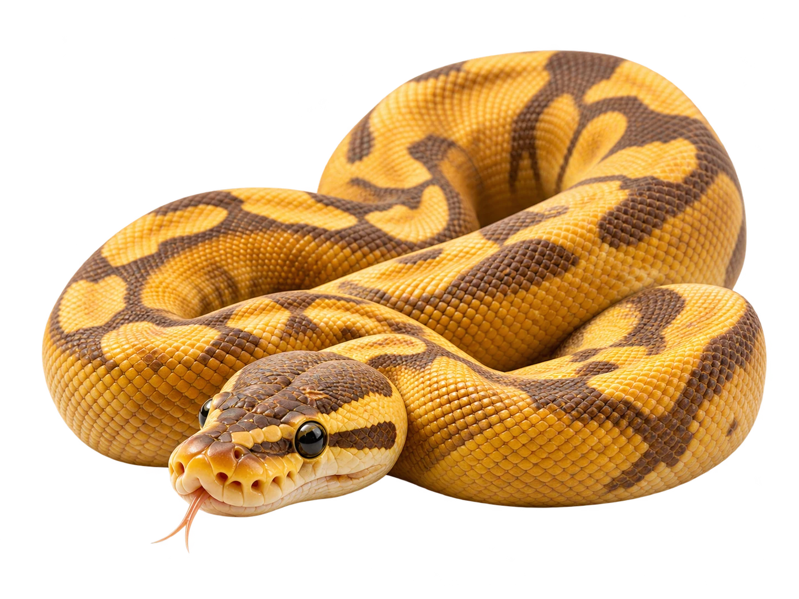
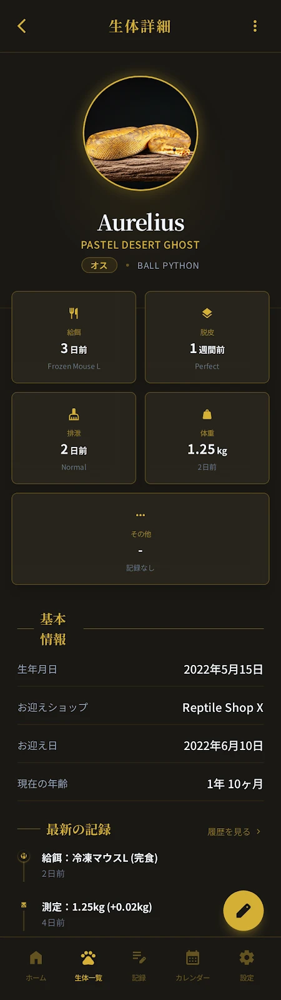
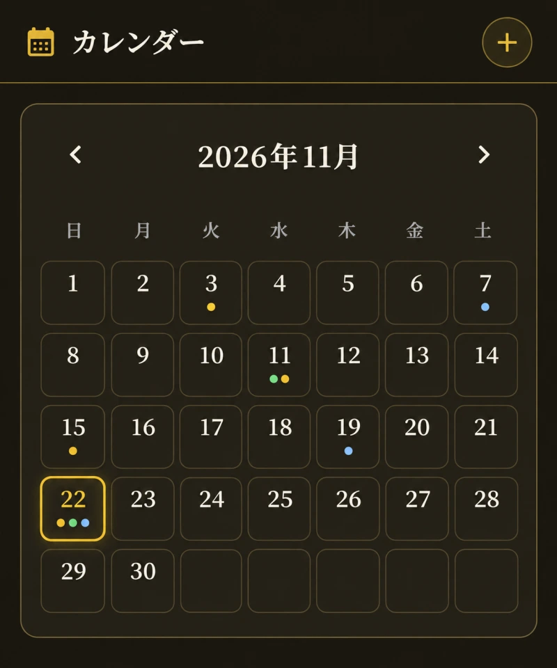
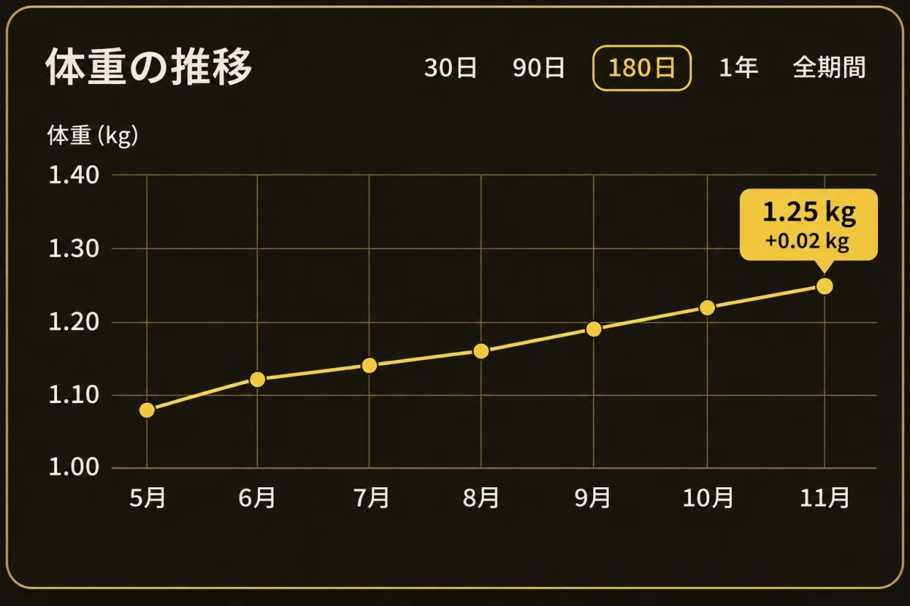

無料で始める
ログイン不要で、
飼育中の個体を3匹まで。
- 6種類の飼育記録とプロフィール
- 個体ごとの履歴・体重グラフ
- 月間カレンダー
- 記録と写真を端末内に保存
給餌、脱皮、体重。1匹ずつの履歴を残して、
前回の記録や変化を見返せます。
基本機能はログイン不要。
飼育中の個体は無料で3匹まで。
iOS・Android向けに準備中


画面は開発中のイメージです
「前回の給餌はいつ？」
カレンダーで記録のある日を確認し、その日の内容を見返せます。
個体ごとの履歴では、年や記録の種類で絞り込み。複数匹の記録も分けて残せます。


日々の記録
給餌、脱皮、排せつ、通院、身体測定、その他の6種類に対応。通院とその他の記録には、写真を3枚まで添えられます。
給餌は前回の餌の内容を引き継いで入力。「食べた」「置き餌」「拒食」を選び、その日の様子を残せます。
無料とPlus
ログイン不要で、
飼育中の個体を3匹まで。
個体数が増えたときも、
機種変更に備えたいときも。
Plusは月払い・年払いの自動更新プランです。価格と提供条件は、公開後のアプリ内購入画面でご確認ください。購入にはGoogleまたはAppleでのログインが必要です。
バックアップはアカウントごとに最新1件を保存します。写真ファイルは含まれません。復元先の記録はバックアップの内容に置き換わります。
使い始める前に
個体登録や日々の飼育記録は、ログインせずに使えます。Plusの購入やクラウドバックアップには、GoogleまたはAppleでのログインが必要です。
クラウドに保存した記録は、同じScale Archiveアカウントでログインすると復元できます。iOSとAndroidをまたぐ移行にも対応します。復元すると、移行先の端末にある記録は置き換わります。写真ファイルはバックアップに含まれないため、別途移した写真を選んで、記録につなぎ直してください。
同じアカウントでログインすれば、保存済みの最新バックアップを復元できます。新規保存、上書き、自動バックアップを使うには、有効なPlus契約が必要です。
最初のバックアップまたは復元が済んだ端末で、毎日・毎週・オフを選べます。Wi-Fi接続時だけにする設定もあります。実行時刻は端末の状態やOSによって変わります。
アプリのクラウドバックアップ画面から退会できます。端末にある個体・記録・写真はそのまま残ります。ストアで契約した定期購入は、ストア側で別途解約してください。詳しくはアカウント削除の案内をご覧ください。